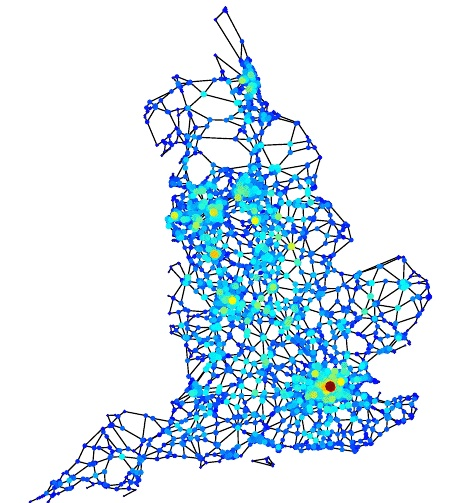

Complex Systems and Data Science | University of São Paulo
Research

Road network in England. Nodes in red indicate central regions.
Complex networks represent the structure of complex systems. These systems are made of interconnected parts, exhibiting collective behavior, adaptation and evolution without any central control [1]. The Internet, food webs, our immune system, our society, biological processes, power grids, and our brain are examples of complex systems whose structure can be represented as networks [2, 3]. Complex systems theory has a highly multidisciplinary nature, which has brought together researchers from many fields including Mathematics, Physics, Biology, Computer Science, Sociology, Epidemiology, Statistics, and others. Good reviews about complex systems can be found in [4,5]. Popular books include [1, 6, 7] and more technical ones [2, 8].
Complex networks represent the organization of complex systems and are the medium in which information, diseases or failures propagate [3, 9]. The early study of complex networks was interested in the characterization of its structure, in order to describe several real-world networks, as well as to find nontrivial patterns of connections, which can be related to system functioning [9]. These works indicated that the organization of most complex networks is neither random nor regular, but has a more structured architecture. The topology of different networks, such as social networks and Internet, are very close: their connectivity distribution follows a power-law (or Pareto distribution) exhibiting scale-free organization [10]. However, although networks present several similar properties, the search for singular properties of classes of networks (e.g. social, technological, biological) is a challenge today. Good books about complex networks are [3, 9, 15, 16]. Several images of networks can be found at the
Visual Complexity website.
Twitter network.
Recently, studies have aimed at analyzing the influence of network structure on several deterministic and stochastic processes [9, 11, 12]. One of the most interesting challenges in Network Science today is to understand the relation between the structure of the system and its emergent dynamical properties [11,12, 13]. For instance, if we know how the structure of networks influences epidemic spreading, then we can predict the diffusion of diseases in a society and develop methods to control the pathogen transmission. The network structure is also fundamental to understand the synchronization phenomenon, which is a ubiquitous process in natural and artificial systems [13]. This dynamical process can model, for instance, the function of neurons in the central nervous system, power stations, crickets, heart cells and lasers [14]. Thus, we can understand and control the behavior of several natural and artificial systems if we know how the network structure impacts the synchronization of coupled oscillators. Numerous other dynamical processes, such as percolation and cascade failures, can also be studied in networks [9].
Protein interaction networks. Lethal proteins are in red.
Our current research is mainly focused on understanding how the structure of complex networks influences the evolution of underlying dynamical processes, like epidemic spreading and synchronization of coupled oscillators. We consider machine learning, multivariate statistical methods and mean-field approximations to explain the role of network structure on dynamical processes. Moreover, we are interested in network centrality, link prediction, network sampling, mathematical modelling and agent-based models. Concerning applications, we employ network theory to study climate dynamics, world trade networks, ecology, medicine and social data. Additional information about my research can be found in my publication list. My current and previous projects can be found in this link (only Fapesp projects).
References
[1] M. Michell, Complexity: A guided tour, Oxford University Press, 2009.
[2] B. Yam, Dynamics of Complex Systems, Westview Press, 2003. Available at http://necsi.edu/publications/dcs.
[3] A. L. Barabási, Networks Science. Cambridge, 2016.
Available at: http://barabasi.com/networksciencebook.
[4] M. E. J. Newman, Complex systems: A survey, Am. J. Phys. 79, 800-810 (2011).
[5] L.A.N. Amaral; J.M. Ottino, Complex networks: Augmenting the framework for the study of complex systems, European Physical Journal B. 2004;38(2):147-162.
[6] P. Bak, How Nature Works: The Science of Self-Organised Criticality, New York, NY: Copernicus Press, 1996.
[7] A. L. Barabási, Linked: The new science of networks, Plume, 2003.
[8] N. Boccara, Modeling complex systems, Springer, 2012.
[9] A. Barrat, M. Barthélemy and A. Vespignani, Dynamical processes in complex networks, Cambridge University Press, 2012.
[10] L. da F. Costa, O. N. Oliveira Jr., G. Travieso, F. A. Rodrigues, P. R. Villas Boas, L. Antiqueira, M. P. Viana, L. E. C. da Rocha, Analyzing and Modeling Real-World Phenomena with Complex Networks: A Survey of Applications, Advances in Physics, 60:3, pg 329-412, 2011.
[11] R. Pastor-Satorras, C. Castellano, P. V. Mieghem, A. Vespignani, Epidemic processes in complex networks, Reviews of Modern Physics, 2016.
[12] A. Arenas, A. Díaz-Guilera, J. Kurths, Y. Moreno and C. Zhou, Synchronization in complex networks, Physics Reports, 469, 93-153 (2008).
[13] F. A. Rodrigues, T. K.DM. Peron, P. Ji, J. Kurths, The Kuramoto model in complex networks, Physics Reports, V. 610, Pages 1–98, (2016).
[14] S. Strogatz, Sync: The Emerging Science of Spontaneous Order, Hachette Books, 2004.
[15] M. E. J. Newman, Networks: An introduction, Oxford University Press, 2010.
[16] S. Dorogovtsev, Lectures on Complex Networks, Oxford University Press, 2010. Available at https://sites.google.com/site/sergeydorogovtsev/lectures_on_complex_networks.